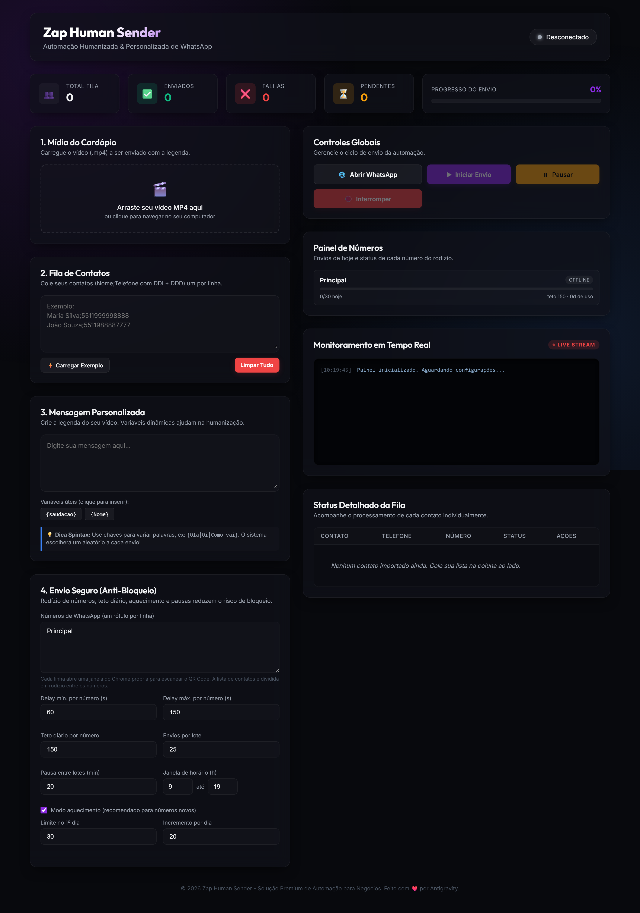
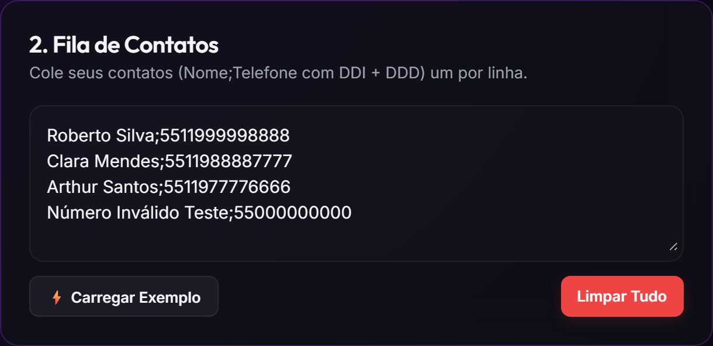
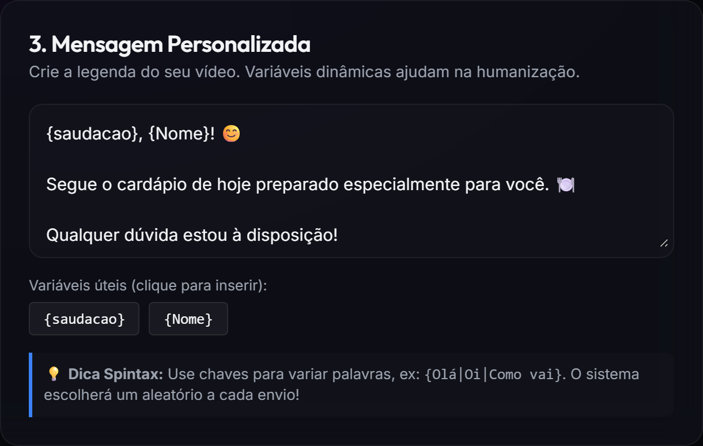
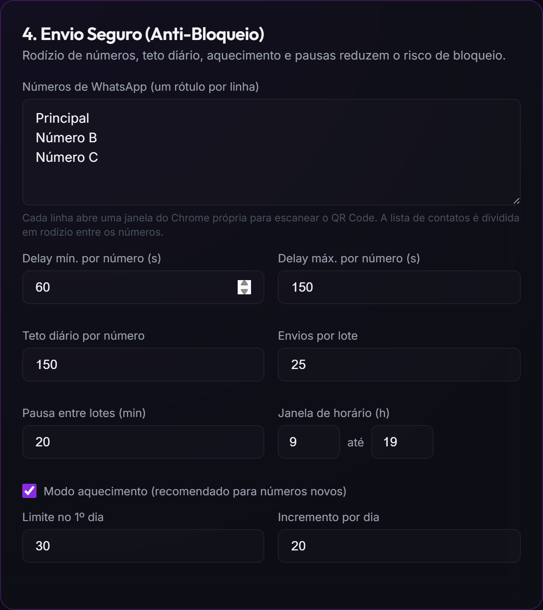
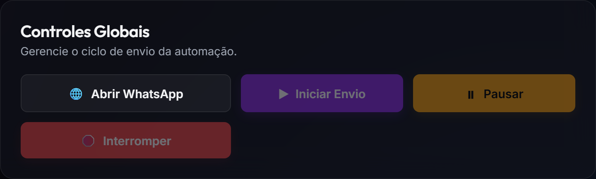
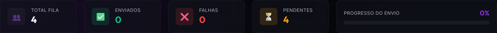
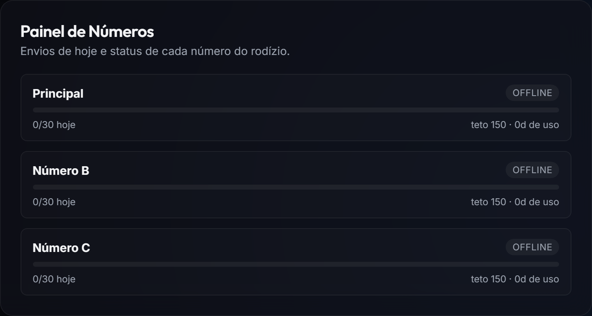
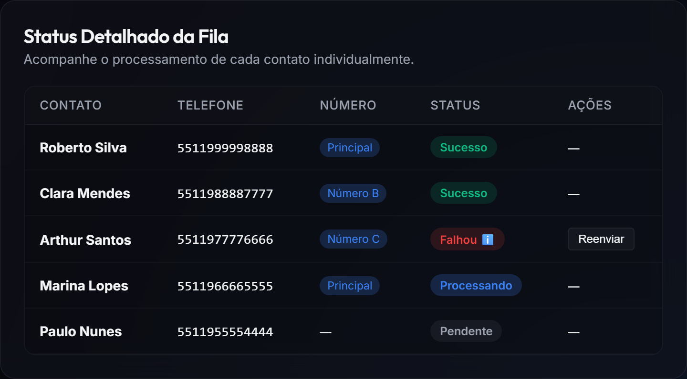
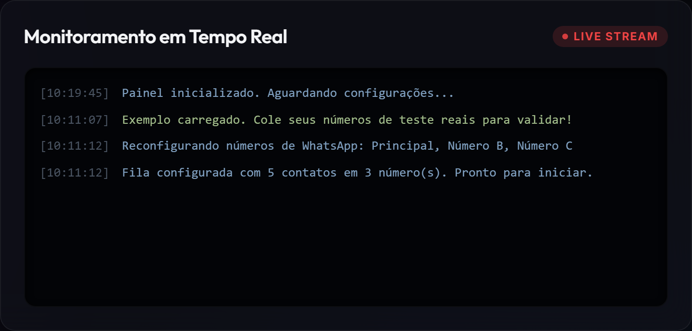
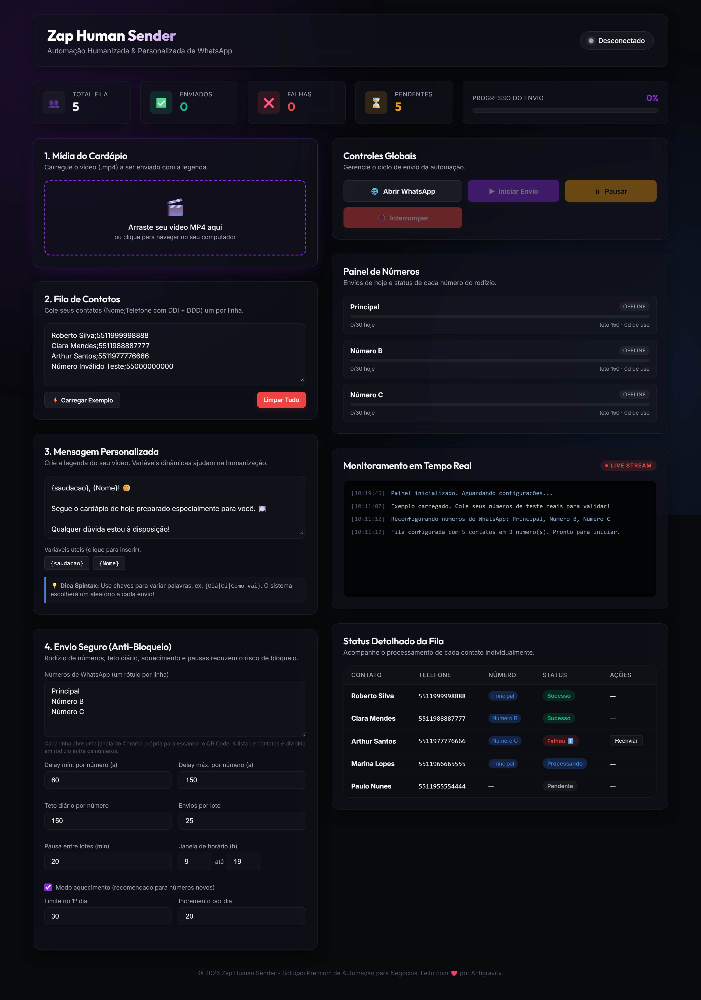

O Zap Human Sender envia uma mensagem de texto com um vídeo (o cardápio) para uma lista de contatos no WhatsApp, imitando o comportamento de uma pessoa: digita devagar, varia as palavras, espera entre um envio e outro.
Para reduzir o risco de bloqueio, ele trabalha com vários números em rodízio: a lista é dividida entre os números cadastrados, cada um com um teto diário, aquecimento gradual, pausa entre lotes e janela de horário.
| Item | Detalhe |
|---|---|
| Computador | Windows 10 ou 11. Não precisa instalar nada além do navegador. |
| Navegador | Google Chrome instalado (o Microsoft Edge também funciona). |
| Números de WhatsApp | De 2 a 3 chips/celulares que ficarão dedicados ao disparo. Cada número precisa estar com o WhatsApp ativo no celular para ler o QR Code. |
| Vídeo | Um arquivo .mp4 do cardápio (o mesmo para toda a campanha do dia). |
| Lista de contatos | Nome e telefone com DDI + DDD. Ex.: Maria Silva;5511999998888 |
| ffmpeg (opcional) | Um ffmpeg.exe na pasta do programa melhora a pré-visualização do vídeo e a variação de mídia. Sem ele o sistema funciona, só com esses recursos limitados. |
ZapHumanSender inteira para o computador.Zap Human Sender.exe.http://localhost:3050.
Preencha os cartões da coluna esquerda de cima para baixo. Os botões de controle ficam na coluna direita.
No cartão 4. Envio Seguro (Anti-Bloqueio), campo “Números de WhatsApp”, escreva um rótulo por linha — um nome para você identificar cada número:
PrincipalNúmero BNúmero C
Cada linha vira uma janela do Chrome separada, com login próprio.
Na coluna direita, clique em “Abrir WhatsApp”. Abrem tantas janelas do Chrome quantos forem os números. Em cada janela:
O login fica salvo — nas próximas vezes normalmente não precisa escanear de novo.
No cartão 1. Mídia do Cardápio, arraste o arquivo .mp4 para a área tracejada (ou clique nela para escolher no computador). O vídeo aparece em miniatura quando termina de subir.
No cartão 2. Fila de Contatos, cole a lista, um contato por linha, no formato Nome;Telefone. O telefone com DDI + DDD (Brasil = 55) e sem espaços.

No cartão 3. Mensagem Personalizada, escreva a legenda do vídeo. Recursos de humanização:
{saudacao} → vira “Bom dia / Boa tarde / Boa noite” conforme a hora.{Nome} → primeiro nome do contato.{Oi|Olá|E aí} → o sistema sorteia uma das opções a cada envio (spintax).
Ainda no cartão 4, revise as travas:
| Campo | Para que serve | Sugerido |
|---|---|---|
| Delay mín./máx. por número (s) | Espera aleatória antes do mesmo número enviar de novo. | 60 a 150 |
| Teto diário por número | Ao atingir, o número para por aquele dia. | 120 a 150 |
| Envios por lote | Quantos envios seguidos antes de uma pausa longa. | 20 a 25 |
| Pausa entre lotes (min) | Descanso do número ao fechar um lote. | 15 a 25 |
| Janela de horário (h) | Faixa de horas em que o envio acontece. Fora dela, a fila espera. | 9 até 19 |
| Modo aquecimento | Sobe o limite do número aos poucos, a cada dia de uso. | Ligado p/ chip novo |
| Limite no 1º dia / Incremento por dia | Ex.: 30 e 20 → dia 1 = 30, dia 2 = 50, dia 3 = 70… até o teto. | 30 e 20 |

Na coluna direita, clique em “Iniciar Envio” (só habilita com vídeo, contatos e mensagem preenchidos). O status muda para “Enviando…”.


Mostra, para cada número, quanto já enviou hoje sobre o limite do dia, e o estado: Conectado, Offline, Em pausa de lote ou Teto atingido.

Uma linha por contato: qual número atendeu, e o status (Pendente, Processando, Sucesso, Falhou). Se falhar, o sistema já faz 1 reenvio automático na hora; persistindo, a linha ganha o botão “Reenviar” para você tentar manualmente.


| Ação | O que faz |
|---|---|
| Pausar | Para depois de terminar o contato atual. O botão vira “Retomar”. |
| Retomar | Continua de onde parou, mantendo os contadores do dia. |
| Interromper | Encerra a fila. Os contatos pendentes ficam sem enviar (pede confirmação). |
| Reenviar (na linha) | Tenta de novo um contato que falhou. Aparece quando a fila não está enviando ativamente. |
Cenário: 3 números (“Principal”, “Número B”, “Número C”), todos novos, primeiro dia de uso. Lista de 150 contatos. Vídeo do cardápio pronto.
{saudacao}, {Nome}.17/30 hoje no “Principal” e Em pausa de lote no “Número B” significa: o Principal já fez 17 dos 30 permitidos hoje; o Número B fechou um lote de 20 e está descansando os ~18 min antes de voltar ao rodízio.
Observação: nas telas deste manual o status aparece como “Desconectado” porque foram capturadas sem os celulares conectados. Em uso real, após escanear os QR Codes, o topo mostra “WhatsApp Pronto” / “Enviando…”.
{op1|op2|op3} em várias palavras, não só na saudação.| Sintoma | O que fazer |
|---|---|
| Ao abrir, aparece só a janela preta e nada mais | Espere 10–15 s (primeira abertura é mais lenta). Se não abrir, digite http://localhost:3050 no navegador manualmente. |
| Log diz “Chrome/Edge não localizado” | Instale o Google Chrome. Se estiver em local diferente, crie a variável de ambiente CHROME_PATH apontando para o chrome.exe. |
| A janela do Chrome não mostra o QR Code | Feche a janela e clique em Abrir WhatsApp de novo. Confirme que o celular está com internet. |
| Contato dá “Número inválido / Não possui WhatsApp” | Confira DDI + DDD (55 + DDD). O sistema já tenta o formato antigo sem o 9 automaticamente. |
| “Teto diário atingido em todos os números” | Normal. O restante vai no dia seguinte — é só iniciar de novo. |
| Preview do vídeo ruim / mídia não varia | Coloque um ffmpeg.exe na pasta do programa (opcional). |
| “Porta 3050 em uso” | Já há uma cópia aberta. Feche a janela preta anterior antes de abrir de novo. |
| Botão “Reenviar” não aparece | Ele só aparece com a fila parada/pausada/pronta. Pause o envio para reenviar manualmente. |